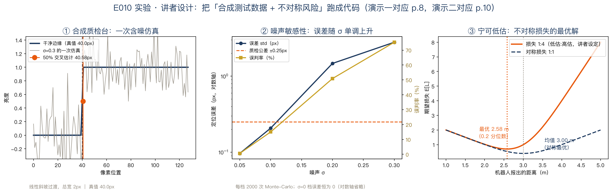

正课 · 02 · 第 1 章 绪论
计算机视觉应用大盘点
工业 11 类 · 消费 8 类 · 一套方法论
好消息 · GOOD NEWS
这些算法，早已上岗
为什么开篇报菜名？熟悉的例子非常能激发兴趣；更重要的是——应用给开放问题加上约束（第 8 页）。
工业清单 · 1/5
认字与质检
OCR
光学字符识别：手写邮编 · 车牌自动识别 ANPROCR · 正文第 5 页 · 图 1.4（第 6 页）
机器检测
双目 + 专用照明测公差：机翼 · 车身零件；X 光查铸钢缺陷machine inspection · 正文第 5 页 · 图 1.4（第 6 页）
共同点：成像可控、任务清晰——讲者解读，视觉最经典的战场。
工业清单 · 2/5
零售与仓储
零售
自动结账通道 · 完全无人商店retail · 物体识别 · 正文第 5 页
仓储物流
自主配送 · 托盘搬运车 · 机械臂抓取零件warehouse logistics · 正文第 5 页 · 图 1.4（第 6 页）
共同点（讲者解读）：环境结构化、边界清楚——所以能大规模部署。
工业清单 · 3/5
医疗与自动驾驶
医学影像
术前/术中图像配准 · 脑形态长期追踪研究衰老medical imaging · 正文第 5 页 · 图 1.4（第 6 页）
自动驾驶
点对点跨城行驶 · 自主飞行self-driving vehicles · 正文第 5 页 · 图 1.4（第 6 页）
估错的代价不是返工，是事故——讲者解读，所以这一组对不确定性最敏感。
工业清单 · 4/5
建模与特效
摄影测量
航拍 / 无人机照片 → 全自动三维模型photogrammetry · 正文第 5 页 · 图 1.4（第 6 页）
匹配移动
CGI 合成实拍：《侏罗纪公园》即一例match move · 跟踪特征点 · 精确抠像 · 第 5–7 页
讲者解读：match move 的本质，是从视频反推相机怎么动、场景长什么样——又是一个逆问题。
工业清单 · 5/5
动捕 · 监控 · 生物识别
动作捕捉
反光标记点 · 多机位围拍motion capture (mocap) · 原书第 7 页
监控
入侵者 · 高速路车流 · 泳池防溺水surveillance · 原书第 7 页
生物识别
指纹 · 访问认证 · 司法鉴定biometrics · 原书第 7 页
原书还推荐 David Lowe 的工业应用网站——清单不止这十一个（第 7 页）。
转折 · SPECIALIZED → CONSUMER
“
这些应用都极其重要，但大多属于相当专用的图像与狭窄领域。
然后笔锋一转：除此之外，还有大量消费级应用——就在你自己的照片和视频里 —— 原书第 7 页
消费清单 · 1/3
照片三连：拼接 · 曝光 · 渐变
全景拼接
重叠照片 → 无缝全景stitching · §8.2 · 图 1.5（第 9 页）
包围曝光
强光与阴影 → 一张完美曝光exposure bracketing · §10.2 · 图 1.5（第 9 页）
形变
朋友 A 平滑变朋友 Bmorphing · 图 1.5（第 9 页）
全景与多曝光合成，很多手机相机已经内置——讲者补充。
消费清单 · 2/3
视频与三维：你家就是片场
3D 建模
快照 → 物体/人的三维模型3D modeling · §13.6 · 原书第 7 页
插图 · 防抖
往视频里插素材 · 去除抖动match move & stabilization · §11.4.4/§9.2.1 · 第 7 页
照片漫游
在照片集之间三维飞行photo-based walkthroughs · §14.1.2/§14.5.5 · 第 7 页
讲者注：原书正文把 3D modeling 指向 Figure 1.5d，而该图注写的是手机 AR 深度遮挡——图文互指略有出入。
消费清单 · 3/3
两张脸：检测与认证
人脸检测
对焦更准 · 图像搜索更相关face detection · §6.3.1 · 原书第 8 页
视觉身份认证
坐到摄像头前，电脑自动登录visual authentication · §6.2.4 · 第 8 页
原书：这些应用学生本就熟悉——有趣且与自己相关，非常能激发学习兴趣（highly motivating，第 8 页）。
方法论 · ENGINEERING
从问题倒推技术
原书工程哲学（第 8 页）：从手头的问题倒推合适的技术——而不是抓住听过的第一个技术就上。应用，正是给开放问题划边界、加约束的东西。
方法论 · SCIENCE & STATISTICS
不只菜谱，还有物理与概率
科学视角（第 8 页）：为系统建最好的物理模型——场景怎么形成、光怎么与场景和大气交互、传感器怎么工作、噪声从哪来；然后反演采集过程。
统计视角（第 8–10 页）：概率分布建模场景与采集；先验 → 贝叶斯建模（附录 B）；估错有代价——损失函数与期望风险（§B.2）。原书例子：机器人测距，低估通常比高估安全。
方法论 · ALGORITHMS
所以全书重度强调算法
鲁棒
噪声与模型偏差之下，不能崩robust to noise & deviation · 原书第 10 页
高效
运行时间与空间都要省reasonably efficient · 原书第 10 页
算法多为高层步骤清单，细节靠引文与习题；某些情况下深度网络也可加速老迭代算法（脚注 4 · Chen/Xu/Koltun 2017）。
动手 · CODE
实验：把方法论跑成代码
③
噪声扫描σ 五档 · 每档 2000 次 Monte-Carlo
④
不对称损失讲者设定 1:4 → 最优在 0.2 分位数
讲者设计实验：第 8 页两句话 → 演示一 7 项断言；第 10 页不对称风险 → 演示二 6 项断言。
实验结果 · OUTPUT
零噪声零误差，风险偏向安全

左：一次含噪仿真 ｜ 中：误差与误判率随 σ 单调上升 ｜ 右：最优 2.58m = 0.2 分位数 ｜ 讲者设计（13/13 断言）
收个尾 · RECAP
带走三句话
- 应用两大类：工业 11 + 消费 8——共同点是把开放问题收窄，给先验和约束留出立足点
- 方法论：从问题倒推技术——定义、约束、选型、实现、评估，配两类测试数据
- 工程之外是科学：物理建模 + 统计反演；损失不对称时，最优答案偏向安全侧
NEXT · 回书指路
读原书§1.1 应用清单与方法论（原书第 5–8 页），数一数：工业 11 + 消费 8
作业公差改严 0.25→0.1px；损失对调 4:1，看最优估计移到均值上方
下一集E011 计算机视觉五十年简史：从方块世界到大模型时代（§1.2）